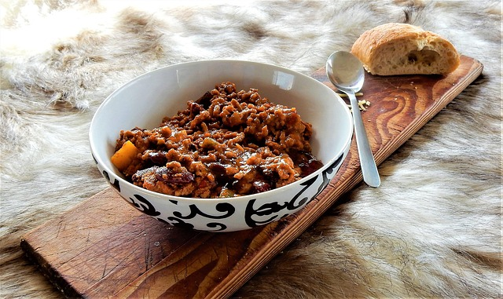

Chili con Carne

| 2 Zwiebeln |
| 3 Knoblauchzehen |
| 1 Paprikaschote |
| 2 Dosen Kidneybohnen (Abtropfgewicht ca. 240 g) |
| 1 Dose Mais (Abtropfgewicht ca. 280 g) |
| 800 g Rinderhackfleisch |
| 2 EL Tomatenmark |
| 500 ml Rinderbrühe (oder Gemüsebrühe) |
| 800 g gehackte Tomaten (alternativ aus der Dose) |
| 1 TL Kreuzkümmel |
| 2 EL Paprikapulver (edelsüß) |
| 1 TL Chilipulver |
| 1 TL Zimt |
| Salz und Pfeffer |
Zubereitung
Die Zwiebeln und den Knoblauch klein hacken, die Paprika würfeln und die Kidneybohnen und den Mais abtropfen lassen. Das Öl in der Pfanne erhitzen und das Hackfleich darin anbraten lassen. Die Zwiebeln und den Knoblauch hinzufügen und mit anbraten. Das Tomatenmark unterheben und kurz mit anbraten lassen. Die Rinderbrühe, die gehackten Tomaten, die Paprika, die Kidnebohnen, den Mais und die Gewürze zugeben. Das Gericht bei mittlerer Hitze ca. 20 Minuten köcheln lassen. Das ganze mit Salz und Pfeffer abschmecken und servieren.